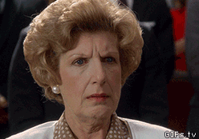
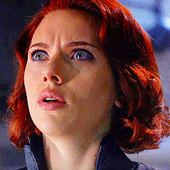
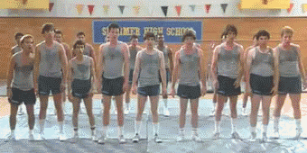

Ces Allié.es Qui N'en Sont Pas
Le titre de ce poste reprends le titre de Superpépette , Ces autistes qui n’en sont pas, où il est question de personnes se disant autistes sans l’être réellement…
[caption id=“attachment_22090” align=“aligncenter” width=“320”] Je sais, moi aussi j’étais so shocked[/caption]
Je vais parler d’un sujet très épineux pour moi. En effet, si certain.es ont le “t’es pas autiste” facile, je refuse, pour ma part, de m’autoriser à présumer de la neurotypie de mon prochain. Premièrement, je n’en sais rien, deuxièmement, c’est brutal pour la personne qui se prend cette affirmation en pleine tronche, alors qu’elle est peut-être désorientée et dans une phase de questionnement qui, comme les autistes qui me lisent le savent bien, est extrêmement perturbant. Rappelons de plus que la neuroatypie ne concerne pas que l’autisme mais également de nombreuses autres conditions, allant de la schizophrénie au mal-nommé “haut potentiel”. Seulement.
Seulement.
Superpépette n’a pas la gâchette facile. Elle fait partie des personnes les plus bienveillantes à ma connaissance. Mais faut pas pousser mémé dans les orties (oui Jujue, mémé c’est toi). S’il y a bien quelque chose dont nous pouvons parler, les autistes Asperger, c’est de l’autisme. Nous savons bien que nous développons des mécanismes de compensation tellement badass qu’il est difficile pour les autres de voir ce que nous sommes vraiment. Mais s’il y a bien un moment où nous arrêtons de jouer aux “personnes normales”, c’est entre autistes. Quand nous suspectons qu’une personne se disant autiste se leurre, sachez une chose: on est les mieux placé.es pour le savoir. Cela n’implique pas d’ignorer la personne, de la violenter verbalement ou de la prendre de haut. On peut en discuter posément, comprendre d’où viennent les difficultés sociales, et tout cela avec bienveillance envers la personne concernée. C’est ce que fait Superpépette, qui possède une patience infinie dont le ciel ne m’a pas gratifiée. Les personnes dans le doute ou en quête d’identité à travers l’autisme ne posent pas forcément de problèmes, c’est juste déconcertant. Mais il y a les autres. Et cette deuxième catégorie, préparez-vous psychologiquement, car elle fait plutôt peur.
[caption id=“attachment_11189” align=“aligncenter” width=“245”] Oui oui[/caption]
Je pense que je vais choquer des gens en disant que l’autisme est un business pour beaucoup de neurotypiques s’auto-proclamant “concerné.es par l’autisme”: pseudo-spécialistes de l’autisme, soigant.es, parents, tout le monde y va de sa petite opinion sur les thérapies à pratiquer, les souffrances de l’entourage, leur noble combat. Il suffit d’aller faire un tour sur les blogs des parents d’enfants autistes pour constater avec quelle insouciance les parents dévoilent l’intimité de leurs rejetons depuis leur plus jeune âge, sans se soucier du consentement de ceux-ci.
Mettons les choses au clair [SPOILER: ça va chier].
VOUS
N’ÊTES
PAS
LÉGITIMES
Chut. Je ne veux pas vous entendre vous défendre, ni argumenter. Vous n’êtes pas “concerné.es” par l’autisme si VOUS N’ÊTES PAS autistes. C’est tout. Vous avez peut-être l’immense privilège de vivre au quotidien avec un.e personne autiste, mais vous n’avez aucun droit de vous approprier ce combat ni de parler en notre nom. Vos ABA, vos chouineries, vos actions anti-packing et tout le tralala, permettez-moi de vous dire que c’est très embarrassant. Car toute cette énergie et cet argent dépensée à la recherche de moyens “d’intégrer” les autistes dans votre monde et à nous faire apprendre votre langage, vous ne la dédiez pas essayer d’appréhender notre monde et notre langage. Vous qui écrivez des témoignages poignants “mon fils ma bataille” pour décrire votre “combat contre l’autisme”, vous n’avez pas la moindre idée d’à quoi ressemble notre monde, des mille et une subtilités qui le composent: je vous ai lus, oui, je me suis infligée vos jérémiades, et je peux vous dire que vous êtes à dix mille lieux de savoir de quoi vous parlez. Utiliser vos enfants comme caution et vous faire mousser sur les plateaux télé ne fait pas de vous des personnes nobles, loin de là.
Moi face aux parents d'autistes qui publient des livres sur leurs gamin.es pour crier au monde leur souffrance: pic.twitter.com/xqqIW3fYYJ
— La Fille Pas Sympa (@germainecancan) 12 Juillet 2015[embed]https://www.youtube.com/watch?v=JnylM1hI2jc&feature=youtu.be[/embed]
Petit à petit, les autistes s’organisent et des projets se construisent. On se fait parfois accuser de “communautarisme” par les personnes qui se retrouvent exclues car non-concernées. Le fantôme communautariste est typiquement français, d’ailleurs, il fera l’objet d’un autre billet. Quoi qu’il en soit, on commence à accorder -vaguement- de l’importance à ce que les autistes ont à dire.
Et c’est là que nous arrivons à nos fameux autistes mythos. Car oui, se faire passer pour autiste peut rapporter, ma bonne dame. Pas seulement pécuniairement mais aussi sous la forme d’une notoriété ou d’une légitimité. Vous trouvez cela farfelu? Vous n’avez peut-être pas entendu parler de Rachel Dolezal? En matière d’usurpation de la légitimité, elle est plutôt balèze. Loin de moi l’idée de mettre au même niveau la lutte anti-raciste et celle pour la neurodiversité, j’ai choisi cet exemple puisqu’il est parlant: oui, c’est un phénomène qui existe, certaines personnes sont capables d’aller très loin pour avoir une place privilégiée au sein d’un mouvement. Elles arrivent à leur fins, prennent une place importante et ont de l’énergie à revendre d’autant plus qu’elles n’ont pas été “cassée”, “broyée” par l’oppression que subissent les véritables concerné.es depuis le début de leur existence. Et elles parviennent même à occuper des postes rémunérés, elles font d’une lutte qui ne leur appartient pas leur gagne-pain et volent la parole qui nous revient. En ce qui concerne le billet de Superpépette, elle savait qui elle visait, la personne s’est bien entendu reconnue a tout de suite réagi en hurlant au communautarisme.
[caption id=“attachment_749” align=“aligncenter” width=“340”] Ceci méritait un facepalm de groupe[/caption]
Ce genre de réaction n’est pas étonnante. Militante féministe du dimanche, je suis bien placée pour savoir à quel point les espaces de mixité choisie comme outils politique provoquent la rage des oppresseur potentiels, habitué qu’ils sont à occuper l’espace visuel, sonore et décisionnaire. Je sais aussi que nous sommes en France, un pays plutôt fan de l’eucharistie catholique à tous les niveaux, ce qui implique que l’on est censé.es vouloir “vivre-ensemble” et se rouler des pelles avec des gens qui nous oppressent au quotidien, même sans le vouloir. Heureusement, d’autres dynamiques se mettent en place aussi bien parmi certaines féministes que parmi certain.es autistes. Il faut s’attendre à se genre d’intrusion, de tentative de culpabilisation, de chouineries voire de remise en question de notre propre légitimité à nous organiser.
Si j’ai un message à adresser à ces allié.es foireux: les autistes ne sont pas votre psychothérapie au rabais, ni votre caution pour jouer les Mères Teresa. Dégagez de nos espaces, dégagez de nos luttes, dégagez de nos vies: parce que vous avez sûrement l’idéal de l’autiste gentil.le, docile et naïf.ve, mais on vous attend au tournant, le couteau entre les dents.